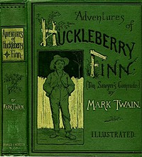
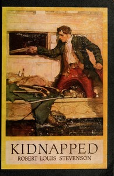
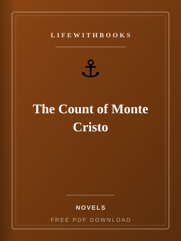
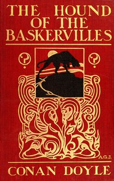
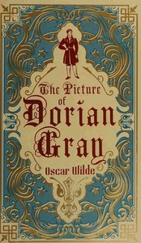
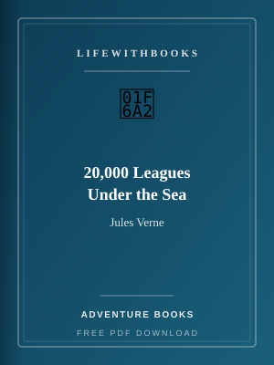

A Christmas Carol
Dickens's beloved ghost story of Scrooge, redemption and the spirit of Christmas.
Read MoreBrowse free books in Novels on LifeWithBooks.
Dickens's beloved ghost story of Scrooge, redemption and the spirit of Christmas.
Read MoreThe first Sherlock Holmes novel — the meeting of Holmes and Watson and a case spanning London and Am
Read More
Dickens's sweeping novel of love and sacrifice set in London and Paris during the French Revolution.
Read More
Huck Finn and the runaway Jim journey down the Mississippi in Twain's great American novel.
Read More
Lewis Carroll's whimsical journey down the rabbit hole into a world of nonsense and wonder.
Read MoreThe spirited orphan Anne Shirley transforms life at Green Gables in Montgomery's beloved novel.
Read MoreAnne leaves Prince Edward Island for college and new love in the third Anne book.
Read MoreDostoevsky's psychological masterpiece of guilt, poverty and moral torment in St Petersburg.
Read More
Hardy's novel of independent Bathsheba Everdene and the three men who love her.
Read More
Mary Shelley's groundbreaking science-fiction novel about creation, responsibility and what it means
Read MoreThe coming-of-age story of the orphan Pip, his mysterious fortune and the lessons of ambition.
Read More
Swift's satirical voyages to lands of tiny people, giants and talking horses.
Read MoreConrad's haunting voyage up the Congo River and into the depths of the human soul.
Read More

Victor Hugo's sweeping epic of justice, mercy and redemption in nineteenth-century France.
Read MoreLouisa May Alcott's warm, enduring story of the four March sisters growing up during the American Ci
Read More
Austen's mature novel of second chances, regret and quiet devotion between Anne Elliot and Captain W
Read More
Jane Austen's beloved novel of manners, marriage and misunderstanding between Elizabeth Bennet and M
Read More
The Dashwood sisters navigate love, loss and society in Jane Austen's first published novel.
Read MoreGeorge Eliot's tale of exile, hoarded gold and unexpected redemption in a rural village.
Read MoreTwelve classic detective stories featuring Sherlock Holmes and Dr Watson, from Arthur Conan Doyle.
Read MoreMark Twain's timeless tale of boyhood mischief, treasure and adventure along the Mississippi.
Read More
Dostoevsky's final novel of faith, doubt and a murder that divides a family.
Read More
Dumas's sweeping epic of wrongful imprisonment, hidden treasure and elaborate revenge.
Read More
Fitzgerald's Jazz Age tragedy of ambition, wealth and the green light on Long Island.
Read More
Sherlock Holmes investigates a legendary curse on the moors in Doyle's most famous novel-length case
Read MoreH.G. Wells's science-fiction thriller about power, secrecy and a man who cannot be seen.
Read MoreWells's dark fable of a scientist who reshapes animals into human-like creatures.
Read MoreSinclair's muckraking novel exposing labour exploitation in Chicago's meatpacking industry.
Read More
Kipling's stories of Mowgli the man-cub raised by wolves in the Indian jungle.
Read MoreDumas's prison mystery and royal intrigue — the final Musketeers saga.
Read MoreHardy's tragedy of a man who sells his wife and cannot escape the past.
Read MoreEleven Holmes stories including the confrontation with Professor Moriarty.
Read MoreKafka's surreal novella of Gregor Samsa, who wakes transformed and is slowly abandoned by his family
Read MoreCastaways use science and courage to survive on a remote island in Verne's gripping sequel world.
Read More
Oscar Wilde's only novel — a provocative tale of beauty, corruption and a portrait that ages while i
Read MoreThirteen stories marking Holmes's return after Reichenbach Falls.
Read MoreA lonely girl discovers a hidden garden and new life in Burnett's gentle classic.
Read MoreSherlock Holmes investigates treasure, betrayal and murder in colonial London.
Read MoreStevenson's chilling tale of a respectable doctor and his monstrous alter ego.
Read MoreDumas's swashbuckling epic of d'Artagnan, Athos, Porthos and Aramis in seventeenth-century France.
Read MoreH.G. Wells's pioneering science-fiction journey into the distant future of humanity.
Read MoreJames's unsettling novella of a governess, two children and possible ghosts.
Read MoreHolmes unravels a coded warning and a secret society in the Pennsylvania coalfields.
Read MoreDorothy and her friends follow the yellow brick road in Baum's beloved American fairy tale.
Read More
Verne's underwater epic aboard Captain Nemo's submarine, the Nautilus.
Read More